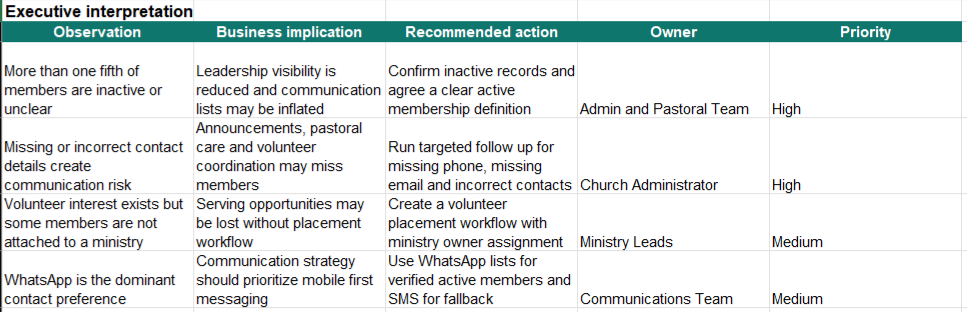
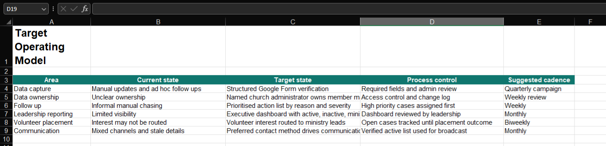
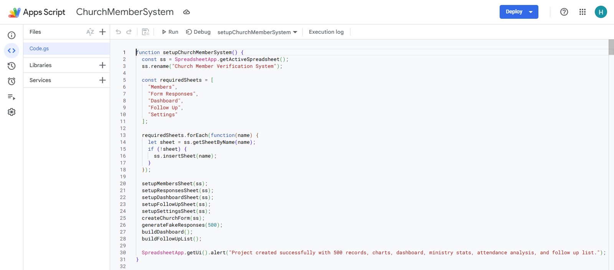
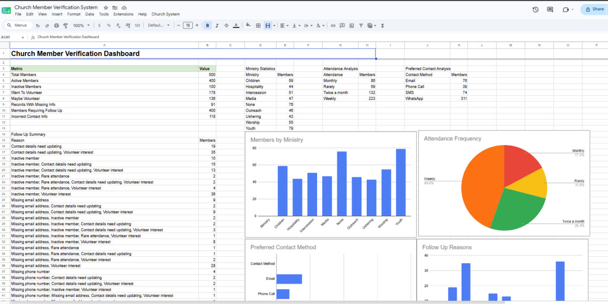
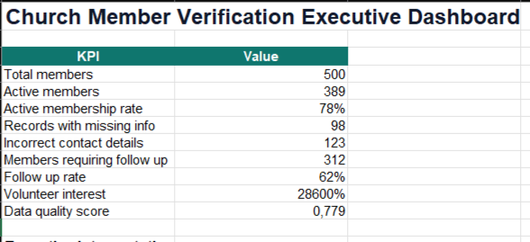
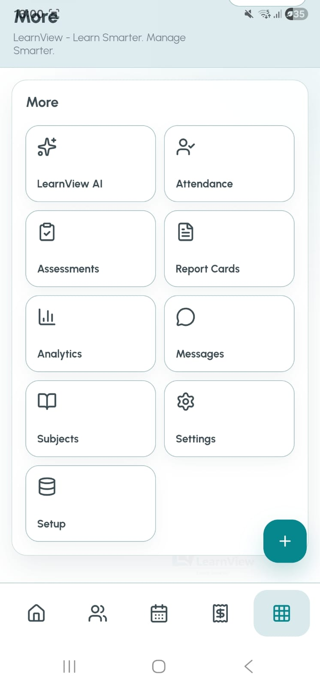

Excel Formulas, pivots, dashboards, and analysis
Python Pandas analysis and validation
Power Query Data transformation and quality checks
Business Analysis Requirements, stakeholders, process design
Process Improvement Operating models and controls
Google Apps Script Workflow and reporting automation
Workflow Automation Repeatable operational processes
SQL Database design, joins, grouping, filtering
PostgreSQL Relational implementation and querying
Dashboard Design KPI layouts and executive reporting
Executive Reporting Insight interpretation and recommendations
Product Development PWA and operational product design
JavaScript Interactive frontend behavior
Networking Packet flow, hosts, protocols, systems thinking
IT and Systems Infrastructure context and operational analysis
Data Analytics
Excel
Excel is used for structured calculations, pivot-style analysis, dashboards, and business reporting across cleaned project data.
Tools used: Excel formulas, pivot tables, dashboards, structured tables, KPI summaries.
Related projects: PC Parts Market Intelligence, Degree Does Not Equal Ability, Beyond Hospitals, Church Member Verification System.
Open Full Skill Page
Data Analytics
Python
Python with Pandas supports deeper analysis, merging, grouping, aggregation, validation, and repeatable analytical workflows.
Tools used: Python, Pandas, CSV processing, grouped metrics, automation foundations.
Related projects: Python skill page, data pipeline validation, portfolio analysis workflows.
Open Full Skill Page
Data Analytics
Power Query
Power Query prepares raw CSV exports for reporting by standardizing types, shaping fields, and improving consistency before analysis.
Tools used: Power Query Editor, column type standardization, data profiling, Excel integration.
Related projects: SQL-to-Excel analytics pipeline, Power Query skill page.
Open Full Skill Page
Business Analysis
Business Analysis
Business Analysis turns operational problems into requirements, stakeholder views, process controls, and decision-ready reporting.
Tools used: Requirements analysis, stakeholder analysis, process mapping, risk analysis, recommendation writing.
Related projects: Church Member Verification System, LearnView Nexus, PC Parts Market Intelligence.
Executive interpretation Observation, implication, action, owner, and priority framework. 
Business Analysis
Process Improvement
Process Improvement standardizes current-state gaps into target-state workflows, controls, owners, and operating cadence.
Tools used: Operating model design, gap analysis, process controls, governance cadence.
Related projects: Church Member Verification System, LearnView Nexus.
Target operating model Current state, target state, process controls, and cadence. 
Automation
Google Apps Script
Google Apps Script automates operational workflows, reporting setup, data generation, dashboard refreshes, and Google Sheets integration.
Tools used: Google Apps Script, Google Sheets, Google Forms, automated setup functions.
Related projects: Church Member Verification System, LearnView Nexus.
Apps Script automation Backend workflow setup and reporting automation. 
Automation
Workflow Automation
Workflow Automation reduces manual administration by linking forms, sheets, dashboards, follow-up lists, and reporting outputs.
Tools used: Google Forms, Google Sheets, Apps Script, process rules, validation logic.
Related projects: Church Member Verification System, LearnView Nexus.
Settings and integration Configuration layer for form and workflow operation.
Databases
SQL
SQL structures relational data and extracts insight through joins, filtering, grouping, and database-backed analysis.
Tools used: SQL, relational tables, joins, grouping, filtering, query design.
Related projects: SQL skill page, PC Parts Market Intelligence, SQL-to-Excel analytics pipeline.
Open Full Skill Page
Databases
PostgreSQL
PostgreSQL is used as the practical database environment for implementing tables and querying the project pipeline.
Tools used: PostgreSQL, relational implementation, database queries, table design.
Related projects: PostgreSQL skill page, SQL analytics pipeline.
Open Full Skill Page
Reporting and Dashboards
Dashboard Design
Dashboard Design communicates KPIs, trends, and operational signals in layouts that decision makers can scan quickly.
Tools used: Excel dashboards, KPI cards, charts, tables, dashboard storytelling.
Related projects: Church Member Verification System, PC Parts Market Intelligence, LearnView Nexus.
Executive dashboard Membership KPIs, attendance, contact methods, and follow-up reasons. 
Reporting and Dashboards
Executive Reporting
Executive Reporting translates analysis into priorities, owners, implications, and recommended actions.
Tools used: KPI summaries, interpretation tables, risk registers, management reporting.
Related projects: Church Member Verification System, Beyond Hospitals, Degree Does Not Equal Ability.
Main KPI summary Executive membership health and data quality view. 
Web and App Development
Product Development
Product Development turns real business workflows into usable systems for operations, reporting, administration, and mobile access.
Tools used: HTML, CSS, JavaScript, PWA design, product workflows, Capacitor Android.
Related projects: LearnView Nexus, Cathdel Creamy, Insight Rides, Ray AI.
LearnView Nexus Education operations platform dashboard.
Web and App Development
JavaScript
JavaScript powers the portfolio interactions, product workflows, category filters, skill selectors, and AI interface behavior.
Tools used: JavaScript, DOM events, interactive UI, PWA behavior, API integration.
Related projects: LearnView Nexus, Ray AI, portfolio website.
LearnView interaction system Mobile navigation and administration hub. 
IT and Systems
Networking
Networking knowledge supports packet flow analysis, protocol review, active host monitoring, and infrastructure-aware troubleshooting.
Tools used: Wireshark concepts, packet logs, IP review, topology thinking, troubleshooting workflow.
Related projects: Networking skill page, Cisco learning, IT support foundations.
Router
Switch
192.167.7.162
Internet
Open Full Skill Page
IT and Systems
IT and Systems
IT and Systems thinking connects infrastructure, data flow, service performance, operational processes, and user-facing reporting.
Tools used: IT support concepts, networking fundamentals, system workflows, operational analysis.
Related projects: Networking skill page, LearnView Nexus, Church Member Verification System.
Risk register Operational systems risk, mitigation, and ownership view.